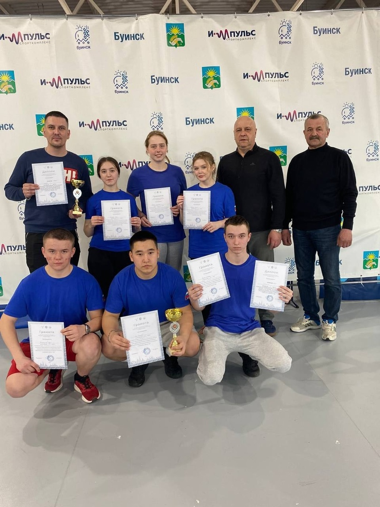

Спортивные достижения
В здоровом теле-здоровый дух.Теннис
- 27.03.2023 г на базе спортивного комплекса "Импульс" г. Буинск прошёл зональный этап соревнований по настольному теннису спартакиады обучающихся профессиональных образовательных организаций Республики Татарстан в 2022-2023 учебном году. Где две наши сборные команды девушек и юношей по настольному теннису в упорной борьбе смогли завоевать золотые медали в командном первенстве
Зайцева Ангелина 402 группа
Зайцева Ксения 112 группа
Диярова Алия 203 группа 
Волейбол
- Команда девушек-волейболисток Тетюшского государственного колледжа гражданской защиты стала победителем соревнований, которые прошли среди студентов профессиональных образовательных организаций города 21 февраля на базе спортивно-оздоровительного комплекса «Барс» г. Тетюши.
В этих соревнованиях приняла участие студентка 112 группы Степанова Диана
Тренеры команд волейболистов - Ибрагимов Айрат Ванхарович и Селюков Виталий Николаевич.
Военизированная эстафета
В рамках месячника по оборонно-массовой, патриотической и спортивной работы 8 февраля студенческие команды участвовали в военизированной эстафете приуроченной к празднику День защитника Отечества. Сильнейшими стали группы:
1 место разделили 303 и 402 группы (основная команда);
2 место - 402 группа (команда "360");
3 место - 404 группа.
Наравне с парнями, в эстафете приняли участие и наши девушки, которые вошли в команды своих групп. А команда 112 группы специальности "Организация оперативного (экстренного) реагирования в ЧС" полностью состояла из девушек.